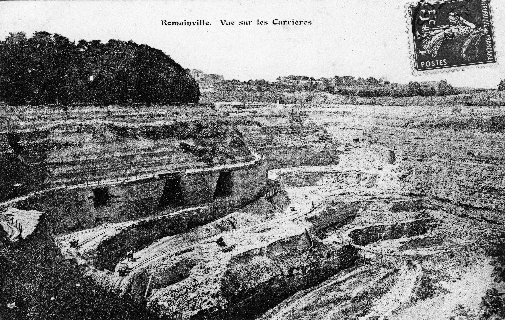
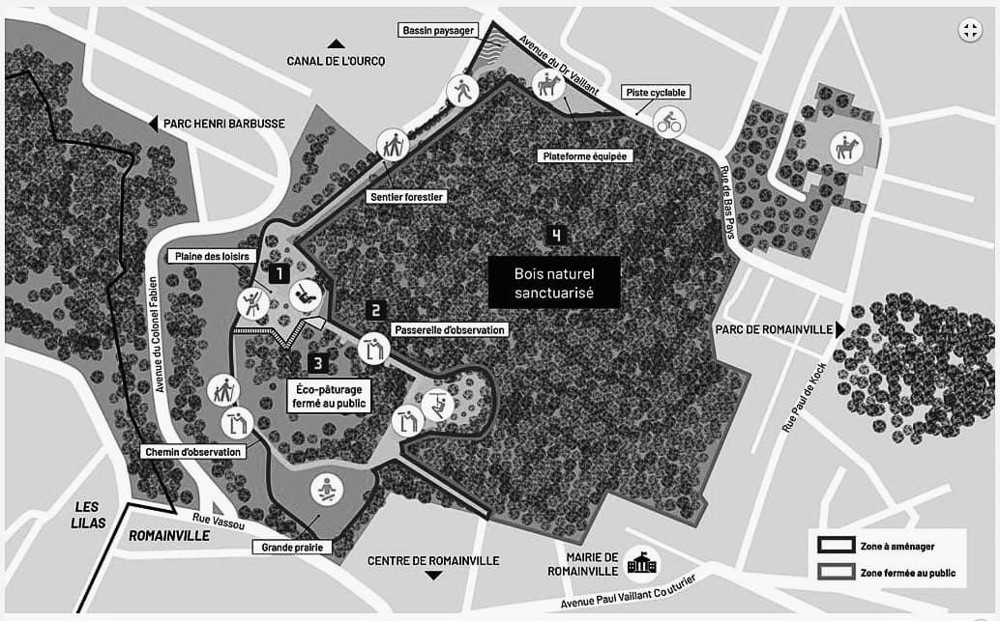
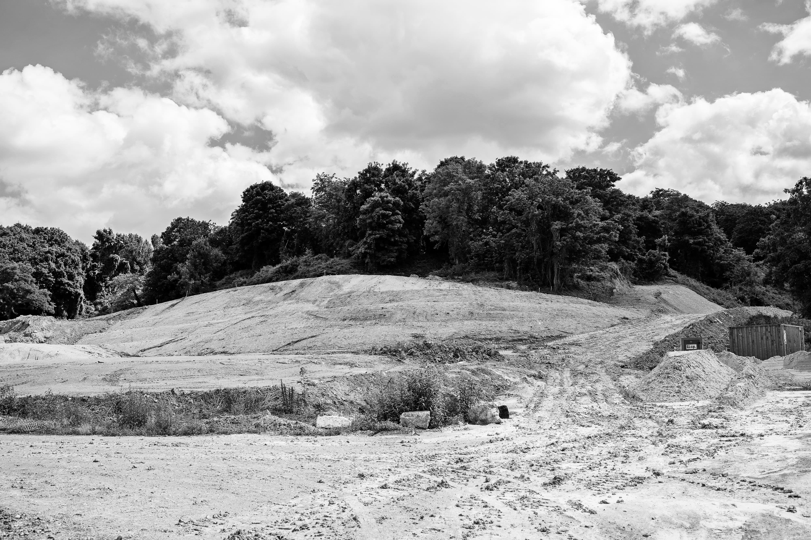
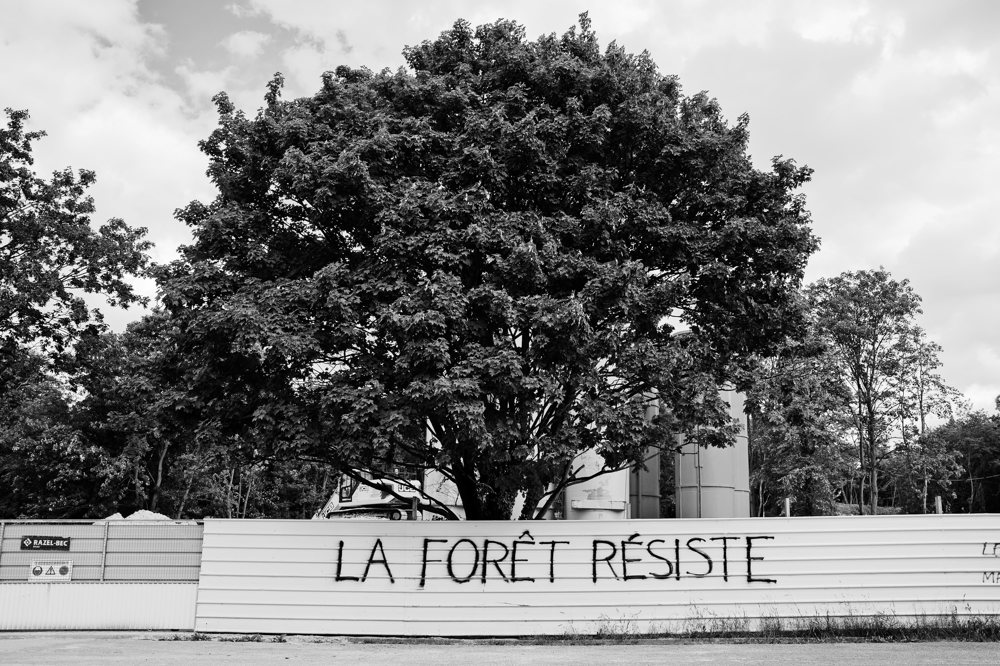

À deux kilomètres au nord-est de Paris, dans le département de la Seine-Saint-Denis, à la confluence des communes des Lilas, de Pantin, de Noisy-le-Sec et de Romainville, une forêt sauvage s’étend sur environ 28 hectares en plein cœur d’un espace urbain dense. Elle fait partie d’un ensemble d’espaces verts de 40 hectares, la Corniche des Forts, du nom des forts de Romainville et de Noisy qui la surplombent. Cette forêt est dite rudérale, c’est-à-dire qu’elle a poussé sur des décombres, ceux d’une ancienne carrière de gypse. Une fois la carrière abandonnée, la végétation a peu à peu pris racine.
Le site a échappé à l’urbanisation car son relief est marqué par une forte déclivité et son sous-sol est un gruyère parcouru de galeries, desquelles le gypse fut extrait. Bien que l’espace soit ouvert, son accès est interdit au public à cause des risques d’effondrement du sol. C’est précisément son inaccessibilité qui a permis le développement de la forêt sauvage. De manière paradoxale, l’héritage industriel a créé une protection naturelle qui a laissé pousser une végétation luxuriante, devenue un refuge pour des oiseaux, des insectes, des amphibiens, des reptiles et des petits mammifères.
La forêt de la Corniche des Forts nourrit une controverse dont la caractéristique, au-delà de sa spécificité et de sa richesse, est d’être localisée : il est question de choisir un projet d’aménagement pour un territoire et d’en déterminer l’usage. Selon quels critères ? Quelles procédures ? Pour qui ? Et si les dispositions légales sont bien respectées, la légitimité du projet est-elle pour autant garantie ?
Comme on a pu l’observer lors d’affaires plus médiatisées, avec par exemple le projet de création d’aéroport à Notre-Dame-des-Landes (NDDL), la délimitation des publics concernés par un aménagement se mêle à des considérations politiques. Dans les deux cas, il s’agit de définir le territoire où s’applique une décision : le référendum mis en place par le gouvernement pour le projet d’aéroport NDDL a été contesté sur le périmètre de son vote influençant les résultats. Dans le cas de la forêt de Romainville, la question qui se pose est celle des bénéficiaires : s’agit-il des habitant·e·s du quartier limitrophe ou de la commune de Romainville ? De celles et ceux des communes environnantes, Pantin, Les Lilas, Bagnolet, Noisy-le-Sec ? Ou du département de la Seine-Saint-Denis, voire de la région ?
Sur un autre plan, l’opposition au projet NDDL a donné lieu à une nouvelle entité, la ZAD (zone à défendre), devenue l’emblème des luttes contre la frénésie bétonnière et de réinvention de nos modes de vie. Un tel récit a été produit à Romainville, où le dissensus profond sur le projet d’aménagement a provoqué la mobilisation de militant·e·s et d’habitant·e·s pour défendre la forêtLe terme de FAD pour forêt à défendre a été employé., qui n’ont pas hésité à reprendre à la formule zadiste : « Nous ne défendons pas la nature, nous sommes la nature qui se défend. »
D’autres acteur·rice·s de la controverse soulignent au contraire l’importance d’un projet d’aménagement qui cherche à valoriser économiquement les quartiers environnants, considérés comme défavorisés et exclus des grands circuits de la globalisation heureuse, tout en prenant en compte les contraintes environnementales. Mais à la différence de NDDL, où la proposition officielle n’a pas bougé face aux résistances, le projet d’aménagement de la forêt urbaine de Romainville a évolué au cours du temps, notamment, aux dires de ses porteur·se·s, par la prise en compte des critiques et suggestions des habitant·e·s et des acteurs·rice·s concerné·e·s.
L’évolution du projet
L’analyse de cette controverse invite à se pencher sur sa chronologie. La manière dont les projets d’aménagement ont évolué en France à partir des années 1990 témoigne d’une sensibilité accrue des citoyen·ne·s vis-à-vis des enjeux écologiques. En trente ans, la perception de l’importance à accorder au « sauvage » s’est renforcée. Durant cette même période, le chômage a connu une forte hausse dans le département de la Seine-Saint-DenisAvec un taux supérieur à 10 % depuis 2000, la Seine-Saint-Denis est l’un des départements les plus touchés par le chômage. Selon une étude de l’Insee de février 2020, le département a connu une désindustrialisation rapide dès la fin des années 1960 : « La part des ouvriers dans la population active résidente est passée de 42 % à 37 % entre 1968 et 1975, mais reste importante par rapport aux autres départements franciliens. », traditionnellement populaire et ouvrier. C’est la désindustrialisation subie par les populations qui a permis à la forêt de naître.
Une brève histoire de la carrière
La roche a été extraite du site au fil des siècles pour produire le plâtre utilisé dans les bâtiments de Paris et sa région. La capitale s’est longtemps développée en reléguant, dans l’actuelle banlieue nord-est et le long de la Seine, les activités polluantes ou nécessitant d’importantes surfaces. Cette externalisation des nuisances et des activités dépréciées incluait aussi le dépôt des déchets urbains dans les communes limitrophes, notamment l’épandage des eaux usées.

Vue sur les carrières de Romainville. Source : Archives départementales de la Seine-Saint-Denis.
Les départements de la petite couronne, particulièrement ceux situés à l’est, ont traditionnellement servi de dépotoir à la capitale. Ils ont aussi accueilli de fortes concentrations de populations socialement défavorisées, souvent d’origine immigrée.
À la date de fermeture de la carrière de Romainville, au milieu des années 1960, nulle réglementation n’a contraint l’exploitant à réhabiliter le site. Il fallut attendre 1976 pour qu’une telle réglementation se mette en place et, comme elle n’était pas rétroactive, la carrière a été laissée dans l’état dans lequel elle se trouvait à la fin de son exploitation.
Le projet d’aménagement
C’est à partir des années 1990 qu’une intervention sur le site paraît nécessaireY compris pour des militant·e·s écologistes qui sont aujourd’hui les plus ardent·e·s défenseur·se·s d’un lieu qui, par un basculement de perception, est devenu une forêt sauvage., tout d’abord pour en permettre l’accès. Le conseil régional d’Île-de-France propose alors de créer une base de loisirs, comme cela a déjà été fait sur d’anciennes carrières. Début 2001, le syndicat mixte de la BPAL (base de plein air et de loisirs) de la Corniche des FortsUne BPAL est une base de plein air et de loisirs. Il en existe onze en Île-de-France dont certaines sont construites sur d’anciennes carrières, comme celles de Créteil et de Cergy. est créé, composé de représentant·e·s de la région, du département et des quatre communes concernées (Romainville, Pantin, Les Lilas, Noisy-le-Sec). Généralement, les BPAL proposent des pelouses, un plan d’eau pour la baignade et des activités variées (escalade, tir à l’arc, sports d’eau, etc.). Cette base de loisirs serait la première en Seine-Saint-Denis, département notoirement carencé en espaces verts. Un groupement composé des sociétés Ilex, Lion Architectes et EGIS et d’urbanistes est alors mandaté pour élaborer un projet. Le relief très particulier du site ne permet pas la création d’un plan d’eau et le projet prévoit son déboisement quasi total, un bouleversement de sa morphologie, une zone commerciale semi-enterrée, un téléphérique, le tout sur 64 hectares incluant les 28 hectares de l’emplacement de la forêt. Ce projet est rapidement abandonné mais reste ancré dans les mémoires, faisant figure d’épouvantail auprès des opposant·e·s.
Un nouveau projet d’aménagement en île de loisirs voit alors le jour. Il reprend certains des aspects de l’ancien projet, comme le solarium ou le poney-club, et reste porté par les mêmes acteur·rice·s, ce que les opposant·e·s interprètent comme la preuve de la continuité entre les projets, toute tentative de modification apparaissant alors comme du greenwashing.
Les critiques et les contestations s’intensifient à partir de la fin des années 2000, alors que les premiers travaux sont effectués dans la zone : un coulis de béton est injecté en 2007 dans les anciennes carrières situées sous le parc départemental de Romainville qui jouxte la forêt, des jardins familiaux sont créés à la lisière du site en 2010, un volume considérable de sable (provenant d’une carrière du Val-d’Oise) est stocké sur place en vue du comblement d’une partie des galeries en 2015.
En décembre 2015, Valérie Pécresse, membre du parti Les Républicains, succède au socialiste Jean-Paul Huchon à la tête de l’exécutif régional depuis 1998. La nouvelle présidente, en collaboration avec la majorité municipale de Romainville ancrée à gauche, confirme le projet d’île de loisirs de la Corniche des Forts, mais dans une version revue, à la superficie réduite, présentée au public en octobre 2017. Sur les 28 hectares que recouvre la forêt, 20 doivent être sanctuarisés : la nouvelle proposition porte donc sur 8 hectares, dont 4,5 seront ouverts au public. Parmi les aménagements souhaités figurent des parcours sportifs, un mur d’escalade, un poney-club, une activité d’accrobranche, des espaces de détente et de fitness, une piste cyclable, des promenades pour observer la biodiversité, ainsi qu’un solarium ensuite requalifié en grande prairie. Une zone dite d’éco-pâturage de 2,2 hectares, fermée au public mais visible depuis une passerelle piétonne, est également incluse.

Carte du projet de base de loisirs la Corniche des Forts. Source : Région Île-de-France, lacornichedesforts.fr
Éco-conception, écologie populaire
La dernière version du projet porté par le conseil régional d’Île-de-France est sensiblement différente des deux premières versions. Pour souligner le changement, Valérie Pécresse n’hésite pas à parler d’une « promenade écologique ». Comme l’atteste le site officiel de la BPAL de la Corniche des Forts, le précédent projet sert de point de comparaison pour mettre en valeur les qualités écologiques du nouveau présenté comme un « projet à taille humaine, avec des activités accessibles à tous ». La philosophie générale est maintenant de combiner loisirs et sensibilisation écologique, tout en sécurisant le site afin d’en permettre l’accès aux habitant·e·s.
Le respect de l’environnement est garanti par l’éco-conception du projet. Urban-Éco-Scop, dirigé par l’écologue Marine Linglart, a été engagé pour réaliser les études réglementaires lors de chaque phase. Ce cabinet est régulièrement sélectionné par la région et les communes d’Île-de-France, qui représentent une part importante de ses client·e·s, pour des missions d’audit et de conseil. Son expertise est mise en avant comme caution scientifique et environnementale.
Le conseil régional travaille étroitement avec la ville de Romainville, en particulier avec Corinne VallsAffiliée au Parti communiste jusqu’en 2002, Corinne Valls a ensuite pris la tête d’une majorité municipale de gauche, avec le soutien du Parti socialiste., maire de la commune de 1998 à 2020, bien que les majorités respectives ne soient pas de la même couleur politique. La mairie de Romainville, notamment par la voix de Stéphane WeisselbergStéphane Weisselberg a été élu au conseil municipal de Romainville en 2001. Depuis janvier 2019, il préside le syndicat mixte de la base de plein air et de loisirs (BPAL) de la Corniche des Forts., l’ancien adjoint à la culture et au développement durable, insiste sur l’importance de développer une écologie populaire. Il estime que les habitant·e·s des cités populaires Gagarine et Langevin qui jouxtent le site bénéficieraient grandement d’un nouvel espace vert à proximité. Pour cette raison, les élu·e·s de la commune et de la région affirment à l’unisson que les habitant·e·s sont très majoritairement favorables à la réalisation d’un aménagement qui rendrait la nature et la biodiversité accessibles au plus grand nombre. Mais cela ne convainc pas les opposant·e·s au projet. La controverse a même tendance à s’envenimer sur ce point : les habitant·e·s ont-ils été vraiment écouté·e·s ?
La controverse éclate
Entre 2016 et 2018, les procédures administratives sont engagées : étude d’impact environnemental, consultation du public, dérogation à l’interdiction d’atteinte aux espèces protégées, etc. La mise en service du projet est prévue début 2021Selon le site officiel du projet. et l’enveloppe budgétaire pour la réalisation des travaux est d’environ 15 millions d’euros, dont 7 sont consacrés au comblement des galeries. Le dossier de demande de permis d’aménager, comprenant l’étude d’impact et la réponse aux remarques de l’Autorité environnementale, est mis à disposition du public à la mairie de Romainville et sur son site internet durant cinq semaines en 2018.
De façon paradoxale, la controverse sur la vertu environnementale de l’aménagement de la Corniche des Forts s’est intensifiée au fur et à mesure que le projet a évolué par rapport à la base de loisirs des années 1990. Les porteur·se·s du projet affirment que plus « l’écologie [a été mise] au cœur du projet », plus les critiques concernant la destruction des écosystèmes engendrée se sont accrues. Quand les travaux commencent avec l’abattage des arbres le 8 octobre 2018, des mobilisations pour préserver la forêt de Romainville donnent lieu à une importante couverture médiatique.
Les oppositions deviennent visibles sur le terrain, les clivages s’accentuent. S’ouvre alors une controverse publique à la résonance inédite. Les débats qui la nourrissent se structurent autour de deux axes principaux : les enjeux liés à la nature du lieu, à son passé industriel, à la pollution des sols et à la biodiversité, et l’enjeu démocratique, la participation des habitant·e·s et leur représentation.
La nature du lieu
Les débats sur la forêt de Romainville tournent autour de la question centrale de la place de la nature en ville. Faut-il sanctuariser la forêt pour qu’elle conserve son caractère sauvage même si elle ne bénéficie aux humains qu’indirectement ? Faut-il au contraire aménager la forêt afin qu’elle soit accessible à des usages humains, quitte à ce que la pression anthropique pèse défavorablement sur les écosystèmes ? Ce choix constitue un véritable dilemme pour les décideur·se·s, si l’on prend en compte les notions de bien commun et de lutte contre les inégalités : en effet, les parties en présence mettent en avant aussi bien la nécessité d’aménagements accessibles aux familles que celle d’un poumon vert sanctuarisé pour les riverain·e·s, dans un quartier populaire qui manque cruellement des deux. Sur un plan technique, l’enjeu de la place de la nature en ville est étroitement lié à la qualité de la biodiversité : quel sens donner à sa préservation ? Toutes les espèces qui s’y trouvent sont-elles à protéger ?
Dans un contexte où la vertu écologique est devenue une valeur partagée, il n’est plus question d’ignorer les sensibilités environnementales mais de les définir et de les incarner. Or, c’est précisément sur ces points que les divergences apparaissent. À des pôles diamétralement opposés se trouvent deux types d’acteur·rice·s : ceux et celles qui conçoivent la préservation de la nature comme un travail de jardinier, qui sarcle, bonifie, désherbe et arrose en vue d’aménager ; celles et ceux qui considèrent que ces tâches doivent être l’œuvre d’écosystèmes autonomes. Si tout le monde réclame un projet respectueux de l’environnement, la manière de faire n’est pas partagée.
L’héritage industriel
La forêt de Romainville est née de la sanctuarisation paradoxale d’un espace en raison des conséquences néfastes d’activités industrielles passées : elle n’a pas seulement poussé sur d’anciennes carrières de gypse, souterraines et à ciel ouvert, son site a également servi à l’entreposage de déchets provenant d’activités chimiques jadis exercées à Romainville et impliquant des métaux lourds qui contaminent durablement le sol et le sous-sol. Le caractère parfois irréversible de ces dégradations de même que les controverses portant sur les techniques de dépollution des sols rendent le traitement de cette affaire particulièrement sensible.
Des débats ont lieu sur la manière de procéder au comblement des anciennes galeries. Plusieurs solutions sont envisagées :
La première consiste à injecter un coulis de sable et d’eau amalgamé par du ciment qui se solidifie dans les galeries pour former un bloc imperméable.
Une autre est de combler les galeries par dépôt de gravats, ce qui présente aux yeux de certain·e·s l’avantage de ne pas imperméabiliser les sols et permet un écoulement naturel des eaux.
Il est enfin possible de procéder à un effondrement maîtrisé des carrières, ce qui évite de recourir aux deux premières techniques de comblement.
La deuxième option est un temps envisagée avec les déblais du Grand Paris ExpressProjet de restructuration du transport à l’échelle de la métropole parisienne porté par la Société du Grand Paris. Il inclut notamment le prolongement des lignes de métro existantes, leur automatisation et la création de nouvelles. en guise de gravats, mais sa mise en œuvre se révèle impossible. C’est la première option qui est retenue : 30 000 m3 de sable sont stockés sur place en 2015. À partir d’octobre 2018, des travaux pour combler les galeries sur 8 des 28 hectares du site conduisent à un déboisement partiel, une coupe de 600 à 2 000 arbres selon la source consultée. Ces divergences d’estimation sont typiques de la controverse publique qui entoure la forêt de Romainville à partir de 2018 : des acteur·rice·s se mobilisent pour alerter sur la menace que les travaux font peser sur les écosystèmes de la forêt et faire la démonstration du caractère inepte des aménagements proposés.

La forêt en chantier (juin 2019). Photo : Vincent Ducard.
Le débat porte également sur la renouée du Japon. Cette plante, considérée comme invasive, est bio-indicatrice de sols pollués : elle a la particularité de pousser sur des terrains dont les sols comportent des métaux lourds. Faut-il la laisser prospérer ? Pourrait-elle contribuer à dépolluer le site ? La réponse à ces questions est négative pour Marine Linglart, du cabinet Urban-Éco-Scop, selon qui il faut détruire les espèces invasives comme la renouée du Japon. Cet avis est partagé par l’ancien adjoint à la mairie de Romainville, Stéphane Weisselberg, qui souhaite juguler son expansion : l’éco-pâturage, par la présence de moutons qui broutent et se nourrissent de la plante, pourrait apporter une réponse. D’autres contestent cette position sans nuance, dont David BismuthDavid Bismuth est animateur du site ornithomedia.com, ingénieur agronome de formation et passionné d’ornithologie. Il vit à proximité de la forêt et a commencé à s’y intéresser à partir de 2011. Il y a régulièrement organisé des balades naturalistes afin d’observer la faune et la flore. Il estime que, si elle pose un problème à cause de son caractère envahissant, la renouée du Japon présente l’avantage de produire de nombreuses fleurs dont les papillons sont friands. La plante vient témoigner de l’héritage industriel ambigu du site : si elle pousse « naturellement » dans les décombres, les décombres ne sont pas « naturels » et bien pollués.
Comme tant d’autres, cette histoire locale, qui met en scène une forêt rudérale et la renouée du Japon, est emblématique de l’Anthropocène : alors que les activités humaines en sont venues à transformer la géologie de la Terre, les espèces sont contraintes d’évoluer et de modifier leurs trajectoires pour s’adapter à ces nouveaux environnements. Le cas de Romainville fait écho aux travaux de l’anthropologue Anna L. Tsing et à sa recherche sur « les possibilités de vivre dans les ruines du capitalisme ». Anna Tsing constate que le capitalisme industriel nous encercle de ruines : sites industriels pollués, paysages naturels dévastés, etc. Or, certains organismes, comme le champignon matsutaké, ont réussi à proliférer dans ces paysages. Son ouvrage Le Champignon de la fin du monde, à travers une minutieuse description des liens que les humains ont tissés en différents endroits du globe avec le matsutaké, apporte « un éclairage nouveau sur la manière dont le capitalisme ravage la planète » tout en montrant des ouvertures possibles offertes par la puissance du vivantVoir aussi le site en ligne Matsutake Worlds Live..
La connaissance et la préservation de la biodiversité
Même si elle compte peu d’espèces rares ou remarquables, la forêt de Romainville abrite une riche biodiversité et c’est le caractère urbain de ce site ré-ensauvagé qui le rend notable. Ses écosystèmes et leurs interactions avec ceux qui les avoisinent sont mal connus. Des études ponctuelles ont été réalisées depuis le début des années 2000, à la demande du conseil régional, par plusieurs cabinets d’ingénierie spécialisés. En juillet 2001, Écosphère a dénombré pas moins de 218 espèces végétales, 40 oiseaux nicheurs, 13 papillons et 5 mammifères. Ses auteur·rice·s parviennent toutefois à la conclusion que la valeur écologique du site est « faible à localement moyenne », conclusion reprise par Marine Linglart qui préconise de laisser évoluer la partie boisée afin qu’elle devienne un écosystème plus riche qu’à présent.
L’étude d’Écosphère a été critiquée par des écologues comme David Bismuth pour son manque d’exhaustivité : elle a été réalisée en juillet, à une période de l’année qui ne permet pas de prendre en compte certaines espèces migratrices ou des plantes déjà fanées. Elle ignore également la valeur paysagère du site, qui est une île de verdure dans un environnement urbain très dense. En se fondant sur l’observation d’un cycle annuel complet, qui permet d’identifier les oiseaux migrateurs et d’inclure les plantes qui fleurissent aux différentes saisons, Bismuth conclut que l’écosystème de la forêt est en réalité très riche.
En 2012, le journaliste Fabrice NicolinoPrésident de l’association Nous voulons des coquelicots, très active dans la lutte contre les pesticides., habitant de Pantin, Hélène Zanier et Pierre Mathon, ancien·ne·s élu·e·s écologistes habitant Bagnolet, créent le collectif des Amis de la forêt de la Corniche des Forts. Hélène Zanier a fait partie du syndicat mixte de la BPAL de la Corniche des Forts en tant qu’élue régionale. Elle était à cette époque favorable à un aménagement de la zone, présentée comme un « terrain vague » par la mairie de Romainville. C’est en se rendant sur le site qu’elle change d’avis, découvrant qu’il s’agissait d’une forêt sauvage. Le collectif des Amis de la forêt de la Corniche des Forts est hostile à tout principe d’aménagement qui pourrait dénaturer la forêt et menacer la riche biodiversité qu’elle abrite. Il demande à ce qu’elle soit préservée et que l’on en fasse un observatoire populaire de la biodiversité. Les raisons de sécurité invoquées pour justifier le comblement des galeries et ainsi protéger la forêt d’un risque de disparition sont hors de propos selon le collectif. Au contraire, il estime que les accidents de terrain peuvent augmenter la richesse en biodiversité, en créant des milieux humides très favorables. La forêt ne disparaîtra pas en dépit des effondrements, même si ces derniers peuvent évidemment la transformer. Le collectif critique vivement les nouveaux aménagements prévus et émet des doutes sur la sincérité de l’engagement écologique des porteur·se·s du projet : selon lui, s’ils ont réduit son ampleur (et donc son caractère destructeur), cela tient plus à des restrictions budgétaires qu’à une quelconque sensibilité environnementale.
La « variable » habitant·e·s
Les Amis de la forêt de la Corniche des Forts jouent un rôle important dans cette controverse : ils se mobilisent aussi bien sur le site que par des actions administratives ou juridiquesLe collectif a par exemple effectué un recours gracieux contre le permis d’aménager, qui n’a pas eu d’effet.. Au début du mois de juillet 2018, le collectif publie une tribune dans Libération, dont le texte est repris dans une pétition diffusée sur Change.org et signée par plus de 30 000 personnes. Cette exposition médiatique rend particulièrement visible leur mise en cause d’un des arguments phares des porteur·se·s de projet : celui que les habitant·e·s de la Cité Gagarine, qui doit partiellement être détruite, seraient unanimement favorables à la base de loisirs. Le collectif soulève frontalement la question de la démocratie et de la représentativité : qui peut parler au nom de qui ? Par quel truchement s’attribue-t-on le prétendu consensus des habitant·e·s : sondage, vote, réunion d’information publique ? Cette question du consensus finit par prendre une place centrale dans la controverse. Comme on l’observe systématiquement dans les controverses localisées, se joue ici une lutte de problématisation autour d’un méta-argument, tour à tour empoigné par les porteur·se·s du projet et les opposant·e·s pour défendre leur cause : au-delà des spécificités du projet lui-même, l’implication et l’accord des habitant·e·s concerné·e·s justifieraient son approbation ou son rejet.
L’aménagement de la Corniche des Forts ne fait, de ce point de vue, pas exception. Même si toutes les autorisations administratives nécessaires ont été obtenues, les procédures d’information et de participation du public requises remplies, même si la mairie de Romainville a proposé, dès 2001-2002, des « ateliers urbains » répartis sur une dizaine de réunions auxquelles ont participé 100 à 150 personnes, puis mis publiquement à disposition le projet d’aménagement lors de la concertation du 18 juin au 25 juillet 2018, le soutien constant des habitant·e·s n’est toujours pas démontré, selon le collectif. Certain·e·s acteur·rice·s estiment au contraire que le processus est opaque. Comme preuve du manque de démocratie, les membres du collectif font valoir que les porteur·se·s du projet ont rejeté la proposition, émise dans la pétition, de prendre le temps de discuter et d’évaluer collectivement toutes les options possibles, en sollicitant notamment des expert·e·s indépendant·e·s des maîtres d’œuvre du projet. Ce refus justifierait pour certain·e·s le recours à la désobéissance civile pour s’opposer au projet.
La demande de démocratie réelle est le cheval de bataille de Sabine Rubin, députée de la neuvième circonscription de la Seine-Saint-Denis depuis juin 2017 sous les couleurs de La France insoumise. De concert avec des associations environnementales aux côtés desquelles elle se mobilise, elle estime qu’il existe des solutions d’aménagement plus pertinentes, qui préserveraient les 28 hectares de la forêt. À ce titre, elle réclame que l’expertise des associations soit reconnue, et non plus simplement balayée d’un revers de la main. Elle émet des doutes sur la sincérité des arguments de la mairie de Romainville lorsque ses représentant·e·s évoquent la nécessité de mettre davantage d’espaces verts à disposition des habitant·e·s. Elle s’interroge sur les personnes dont on parle : s’agit-il des habitant·e·s actuel·le·s de la Cité Gagarine ou de celles et ceux, plus riches, que la mairie souhaite attirer grâce aux projets immobiliers menés avec le promoteur Nexity, très présent dans la commune et celles avoisinantes ?
Cet argument est également repris par l’historien Sylvain Piron, directeur d’études en histoire à l’École des hautes études en sciences sociales (EHESS) et habitant de Bagnolet. Il replace les aménagements de la forêt dans le contexte plus général d’une volonté des élu·e·s de valoriser, si ce n’est gentrifier, Romainville par des opérations immobilières qui prennent tout leur sens avec le projet d’aménagement du Grand Paris. La création de la base de loisirs serait étroitement liée aux projets de promoteurs immobiliers : d’un côté Nexity et de l’autre la fondation d’entreprise Fiminco qui « réinvestit un site industriel hors norme » à Romainville, à côté du quartier de l’Horloge et d’un centre commercial à venir. L’opacité des décisions témoignerait d’une absence de démocratie, les concertations avec les habitant·e·s, qui se sont résumées à des réunions d’information, étant insuffisantes selon lui. Il constate d’expérience que l’avis des opposant·e·s n’est pas pris en compte. Fortement engagé contre le projet, surtout à partir de l’été 2018, l’historien contribue à un toxic tourUn toxic tour prend la forme d’une visite guidée de lieux de pollution de l’environnement et de dérèglement climatique, par et pour celles et ceux qui y habitent. Le toxic tour de Romainville s’inspire de ceux organisés depuis l’automne 2014 par le collectif Toxic Tour 93 en Seine-Saint-Denis. L'enregistrement audio disponible sur la radio R22 Tout-Monde concerne particulièrement la forêt à partir de 40’50. le 16 juin 2019, au cours duquel il présente ses arguments sur l’aménagement du site de la Corniche des Forts.
Il pense que l’enjeu principal n’est pas celui de la biodiversité, mais celui du cadre de vie et de la préservation du climat, dans la mesure où une telle forêt constitue un îlot de fraîcheur en concentrant l’humidité.
La position de Sylvain Piron ajoute une dimension importante à la controverse, celle des représentations et de l’imaginaire collectif : il estime notamment que les politiques construisent un discours anxiogène autour de la figure de l’étranger·e, qu’il s’agisse d’habitant·e·s ou d’espèces présentes dans la forêt. Sur les plaquettes de présentation de l’île de loisirs, tous les enfants sont blancs et blonds et non à l’image de ceux qui habitent la commune. De façon semblable, la renouée du Japon, qui n’est pas une espèce endémique, est présentée comme une espèce étrangère et invasive, responsable de la dégradation du site. Cette plante est selon lui utile et pionnière car elle parvient à sortir de terre là où rien d’autre ne pousse.
« La forêt résiste »
L’analyse de la controverse opère une jonction entre ses deux axes principaux : la nature du lieu, à la fois friche industrielle et havre de biodiversité, et l’opacité des processus de décision. Elle donne une indication importante sur les luttes environnementales présentes et à venir : beaucoup, au sein de la classe politique comme des citoyen·ne·s, gardent une vision « non conflictuelle » de l’écologie. L’appel au vert serait consensuel et au-dessus des querelles partisanes. Ce n’est pas un hasard si le projet de l’île de loisirs, porté par deux partis traditionnellement adversaires, s’est buté à une coalition extra-institutionnelle, polymorphe, qui utilise des plateformes de mobilisation citoyenne comme Change.org et n’a pas pignon sur rue dans la démocratie représentative française. Non, décidément, l’écologie ne fait pas l’unanimité. L’écologie au service de qui ? Et quelle écologie ?
Le défaut de représentation critiqué soulève également des questions plus larges. Les acteur·rice·s cité·e·s dans ce cas de controverse, qui ont été à l’initiative de pétitions, d’enquêtes, de reportages, de contre-expertises et de tribunes, correspondent à des profils sociologiques rarement issus des classes populaires. Ils sont journalistes, élu·e·s, chercheur·se·s. Peu d’entre elles et euxL’association Spoutnik, et en particulier son vice-président Mohamed Boughanmi, défend les intérêts des habitant·e·s de la Cité Gagarine et s’est mobilisée contre le projet de la Corniche des Forts. habitent la Cité Gagarine de Romainville. La « variable » habitant·e·s se révèle extrêmement complexe à définir, surtout au moment où l’on tente de lui donner une voix. Cette controverse nous enseigne que, d’une certaine manière, le déficit de pluralisme doit être abordé sous plusieurs angles : il ne concerne pas seulement la politique, où l’on observe une surreprésentation de certains types sociologiques (voire de classes sociales), mais aussi la prise de parole publique, car les capacités d’organisation, d’expertise et de mobilisation ne sont pas équitablement réparties au sein de la population.

La forêt résiste (juin 2019). Photo : Vincent Ducard.
D’un point de vue historique, l’enjeu de la nature en ville met en lumière une contradiction entre différents modèles philosophiques, contradiction qui a des conséquences importantes sur l’évolution de nos sociétés. Par définition, l’urbanisation s’est faite au détriment d’espaces naturels, la nature en ville étant confinée dans des parcs et des jardins. L’approche hygiéniste qui a prévalu durant la seconde partie du XIXe siècle a consacré une vision domestiquée de la nature en ville. L’époque présente est marquée par des objectifs de lutte ou d’adaptation au réchauffement climatique : un espace vert urbain constitue dans ce cadre un îlot de fraîcheur.
Si la modernité a jusqu’à présent assigné aux humains un rôle central dans la gestion du territoire – ce que Sylvain Piron nomme « l’occupation du mondeSylvain Piron, L’Occupation du monde, Bruxelles, Zones sensibles, 2018. » –, ce positionnement se voit bouleversé depuis quelques années. L’heure est venue de regarder les non-humains comme des entités à part entière, dont la subjectivité s’exprime indépendamment de notre perception, comme l’affirme le philosophe Baptiste MorizotBaptiste Morizot, Sur la piste animale, Arles, Actes Sud, 2018..
« La forêt résiste », écrivent les manifestant·e·s sur les tôles protégeant les travaux. Le site de Romainville serait, selon cette vision, à défendre de nous, de notre intrusion, comme si le temps de la conciliation entre les humains et le sauvage était caduc. Le sujet est la forêt. Plusieurs modèles anthropologiques s’affrontent ici : certains semblent en crise, attaqués, mais toujours appliqués dans les processus démocratiques, tandis que d’autres émergent peu à peu, suscitant l’enthousiasme de celles et ceux qui se décrivent comme porteur·se·s d’un nouveau paradigme.
Luigi Cerri
à partir d’une enquête de Nicolas Benvegnu
Luigi Cerri est comédien, auteur, metteur en scène et co-directeur du laboratoire Fabrique de Terriens. Il est docteur en économie politique.
Sylvain Piron exhume les structures enfouies qui ont mené à l’occupation du monde par l’Occident et à ce que l’on nomme l’Anthropocène. Il démontre la manière dont la « grande asphyxie » de l’atmosphère par l’accumulation du dioxyde de carbone est liée à l’économie et il dresse un tableau d’ensemble du problème culturel, social et métaphysique que pose la place majeure de l’économie dans le monde contemporain. Sa formation d’historien médiéviste nous fait voyager dans le temps car, écrit-il, la « domination de l’économie vient de très loin ». Il retrace la manière dont elle a été favorisée par le christianisme et la théologie rationnelle du XIIIe siècle qui a mis en place des principes de séparation, de la nature et du surnaturel notamment, portant en germe la modernité. Son ouvrage appelle aussi à une révolution en sciences sociales, une révolution éthologique faisant disparaître les critères de différenciation entre humains et animaux.
Dans ce livre original fondé sur des enquêtes de terrain et une riche iconographie, l’anthropologue américaine Anna L. Tsing propose d’explorer la vie dans les ruines du capitalisme moderne en suivant l’étonnante odyssée d’un champignon qui pousse au milieu de forêts détruites et de zones abîmées. Sur la piste du matsutaké, un mets très apprécié au Japon, elle s’intéresse aux cueilleur·se·s précaires de l’Oregon, souvent vétérans des guerres américaines ou immigré·e·s sans papiers. Leur expérience montre que la précarité n’est pas seulement un terme pour décrire la condition de travailleur·se·s sans emploi stable, mais aussi un concept pour penser notre monde ravagé par un capitalisme de plus en financiarisé et déconnecté du monde réel.